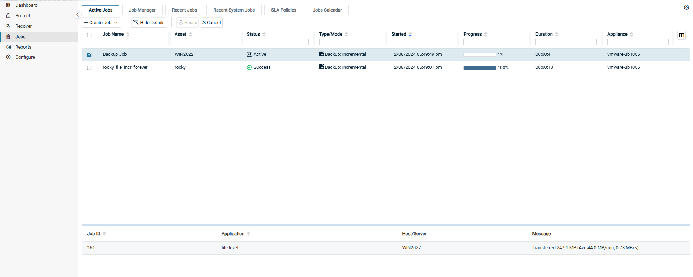
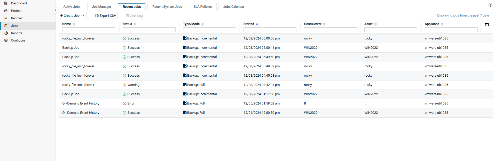
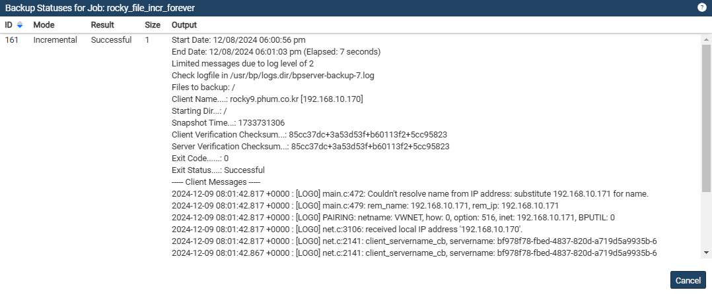
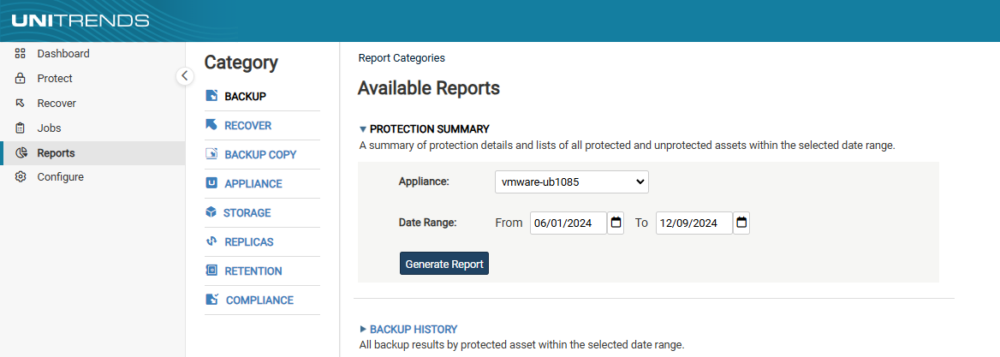

모니터링 방법#
1. Active Jobs#
Jobs → Active Jobs탭은 현재 실행 중인 모든 작업과 실행 대기 중인 모든 작업의 실시간 리스트를 제공합니다.
작업 세부 정보를 확인하려면 아래 단계를 따르세요.
(1) Jobs → Active Jobs탭을 클릭합니다.
(2) 확인할 작업을 선택하고 View Details버튼을 클릭합니다.
(3) 작업 세부 정보가 나열됩니다.

Job ID : 작업에 할당된 시스템 생성 ID 번호입니다.
Application :
Host-Level 백업의 경우, 가상호스트 유형을 포함합니다.
ex) VMware, XenServer, Hyper-V 2012 R2
Application 백업의 경우, Application 유형을 포함합니다.
ex) SQL Server 2012, Oracle 11, Exchange 2013
에이전트 기반의 백업의 경우, 파일 백업 또는 이미지 백업을 포함합니다.
System Metadata에는 Unitrends 어플라이언스 구성 및 설정과 같은 시스템 정보가 포함됩니다.
이 시스템 정보의 변경 사항이 감지되면 Backup Copy 작업 중에 System Metadata가 대상 서버에 복사됩니다.
Host/Server : 가상 호스트 또는 물리 서버의 이름입니다.
Message : 작업 중에 생성된 시스템 생성 메세지입니다.
(4) Hide Details버튼을 클릭하면 원래 페이지 보기형식으로 돌아갑니다.
2. Recent Jobs#
Jobs → Recent Jobs탭은 최근 7일동안의 작업 결과를 보여줍니다.
최근 7일 간의 작업 내역을 확인하려면 아래 단계를 따르세요.
(1) Jobs → Recent Jobs탭을 클릭합니다.
(2) 최근 7일 간의 작업 내역이 목록으로 나타납니다.

각 열에 대한 정보는 다음과 같습니다.
Name : 스케줄의 이름
Status : 작업의 최종 상태.
success(초록색) : 성공적으로 작업이 완료되었습니다.
warning(노란색) : 경고와 함께 작업이 완료되었습니다.
error(빨간색) : 오류가 발생하여 작업이 완료되었습니다.
Type/Mode : 작업 유형(backup, backup copy 또는 restore) 및 모드(Full, Incremental, Differential 또는 Selective)
Started : 작업이 시작된 날짜와 시간입니다.
Host/Server : 가상 호스트와 물리 서버의 이름입니다.
Asset : 작업이 실행된 대상의 이름입니다.
Appliance : 작업을 실행한 Unitrends 어플라이언스의 이름입니다.
Application :
Host-Level 백업의 경우, 가상호스트 유형을 포함합니다.
ex) VMware, XenServer, Hyper-V 2012 R2
Application 백업의 경우, Application 유형을 포함합니다.
ex) SQL Server 2012, Oracle 11, Exchange 2013
에이전트 기반의 백업의 경우, 파일 백업 또는 이미지 백업을 포함합니다.
System Metadata에는 Unitrends 어플라이언스 구성 및 설정과 같은 시스템 정보가 포함됩니다.
이 시스템 정보의 변경 사항이 감지되면 Backup Copy 작업 중에 System Metadata가 대상 서버에 복사됩니다.
Size(MB) : 데이터 크기입니다.(MB)
Files : (해당되는 경우) 파일 개수입니다.
ID : 작업에 할당된 시스템 생성 ID 번호입니다.
(3) 작업을 선택하고 View Log를 클릭하면 해당 로그를 확인할 수 있습니다. 
3. Reports#
Reports → Backup탭은 지정한 날짜에 맞춰 작업 레포트 리스트를 제공합니다.
백업 작업 레포트를 확인하려면 아래 단계를 따르세요.
(1) Reports → Backup탭을 클릭합니다.
(2) BACKUP HISTORY 탭을 클릭하여 Date Range를 조정하여 확인할 날짜 범위를 지정합니다.(From/To)
(3) Generate Report 버튼을 클릭하여 레포트를 생성합니다.

(4) 다음과 같이 표시되는 목록을 커스텀할 수 있습니다.
입력한 문자열이 표시된 행만 표시하려면 열의 필터 영역에 텍스트를 입력하세요.
하단에 ‘rows per page’에서 값을 선택하여 각 페이지에 표시되는 행 수를 수정할 수 있습니다.